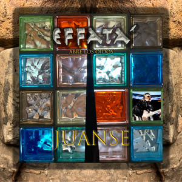
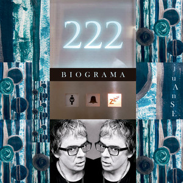

INICIO
SHOWS
DISCOGRAFIA
HONKYTONK X JUANSE
VER DISCOGRAFIA COMPLETA


A través de imágenes de conciertos clásicos y detrás de escena, se cuenta la historia de los indómitos Ratones Paranoicos, la banda de rock más persistente de Argentina.